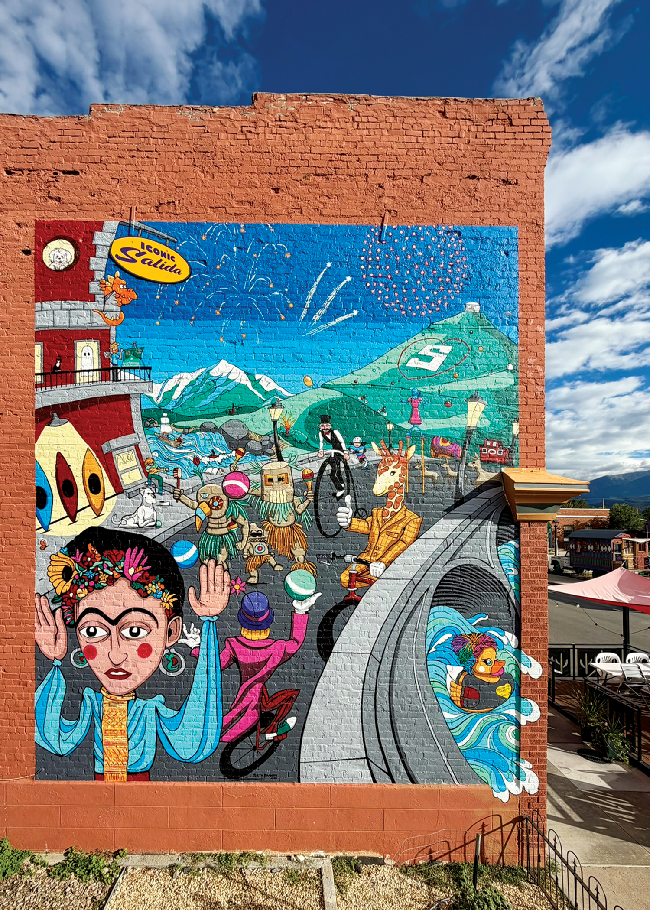

Iconic Salida
Mural
"Iconic Salida" was designed by artist Seth Brandon. The owner of the building, Dorothy Norbie, approached Ken Brandon of the Box of Bubbles about commissioning a mural for the side of her building. He introduced her to Seth and they started brainstorming. The group decided that a whimsical mural featuring a variety of local icons would be the perfect subject.
Salida is notorious for its weird, wild and wonderful art and artists. It's one of the things that makes living in Salida so magical. As president of the Salida Council for the Arts, Ken Brandon is well known in the area for his contributions to the local art scene, and now his son Seth is continuing the tradition.
Seth grew up in Salida and attributes his dad with his lifelong passion for art and creativity. He spent the last 20+ years working in the film and television industry as an Illustrator, Art Director, and Prop Master. He and his wife Éowyn Mishawn moved back to Salida about 3 years ago, and are finding their place in the community.
Seth, Ken and Éowyn spent every morning in August up on the scaffolding, painting this mural and are so excited to share it with all of you.
136 E 2nd St, Salida, CO 81201
West side of the Tacos El Tapatio building